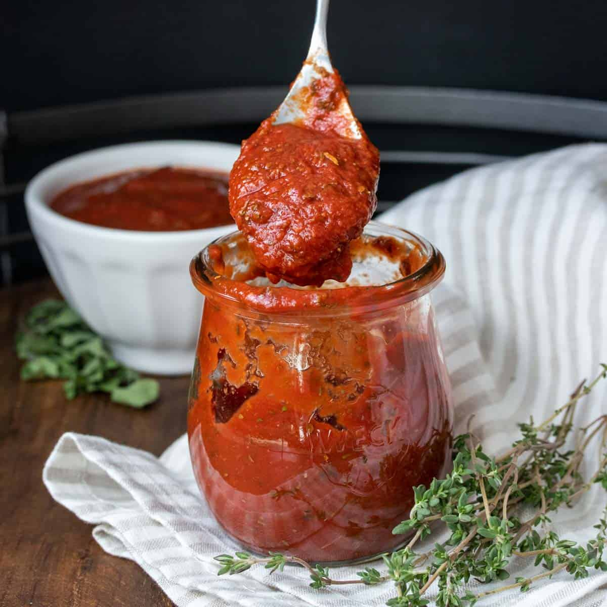

Pizza sauce with sundried tomatoes

To go along with the pizza dough, here is an easy tomato sauce to quickly make while your dough is rising.
Simply add the chop and add the ingridients into a food processor and your done.
Ingredients
- 3 Large cupfuls of chopped tomatoes
- 2 Tbsp Sun dried tomatoes, chopped
- 1 Tbsp Tomato purée/li>
- 2 Garlic cloves, chopped
- 8 Basil leaves, chopped
- 1 Red chilli, chopped, or a pinch of dried chilli flakes (optional)
- 1 tablespoon Extra virgin olive oil
- Salt and pepper to taste.
Method
- Chop and prepare all ingredients.
- Add ingredients to food processor and pulse until you have the consistancy you want for your sauce.
- If you find the sauce is too runny for your liking, add a little more tomato purée. That will thicken it up.
return to the recipe list here